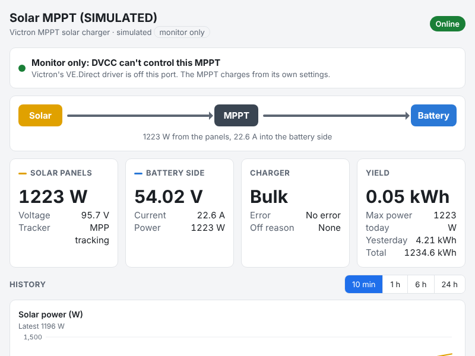

Plug your MPPT solar charger into the Cerbo with a VE.Direct cable and install this monitor. You'll then see the MPPT's readings on the Cerbo screen, in the VRM app, and on a web page for your tablet. The MPPT keeps charging from its own settings: the Cerbo's DVCC can't change them.

The monitor's web page on a tablet (shown here with the built-in pretend MPPT).
When you plug a Victron MPPT into a Cerbo GX, the Cerbo's own driver registers it as a solar charger. If DVCC (Distributed Voltage and Current Control) is on, the Cerbo then takes over the MPPT's charging. It sends the MPPT a charge voltage and current, and the MPPT shows "External control". With a managed battery on CAN, like a Lithionics, the Cerbo switches DVCC on by itself and may lock it. Victron has no setting that leaves one MPPT out of DVCC.
Victron's driver starts slightly before the monitor when the Cerbo boots. In that short window DVCC could send the MPPT a limit. The monitor then stops the driver, and the MPPT goes back to its own settings. Step 6 checks this on your system. The optional one-way cable, near the end of this guide, closes the gap completely.
| Before | After installing the monitor |
|---|---|
| The Cerbo (DVCC) decides the MPPT's charge voltage and current | The MPPT charges from its own settings, which you set in VictronConnect (step 2), together with the battery's BMS |
| Shown as a solar charger on the Cerbo and in VRM's solar widgets | Shown as "Solar MPPT": cards in the switch pane, a DC source on the Overview, VRM's Switches panel, and its own web page |
| Settings could be changed through the Cerbo or VRM | Change settings with VictronConnect over Bluetooth, next to the MPPT. The Cerbo can't change the MPPT any more, on purpose |
| Item | Details |
|---|---|
| MPPT solar charger | A Victron BlueSolar or SmartSolar MPPT with a VE.Direct port |
| Cerbo GX | Running Venus OS v3.80 or newer (Settings › General › Firmware). Older versions don't show the switch-pane cards |
| VE.Direct cable | Victron's straight (part no. ASS030530xxx) or right-angle (ASS030531xxx) cable, long enough to reach. 10 m (33 ft) at most, and it can't be extended. A VE.Direct-to-USB cable into a Cerbo USB port works too |
| VictronConnect app | On your phone or tablet, to set up the MPPT over Bluetooth (step 2) |
| A Windows PC | On the same network as the Cerbo, for the Cerbo Setup helper. No PC? Use the USB-stick install in step 5B |
| The monitor | From GitHub: github.com/CKOCI13/Victron-Cerbo-monitor-a-MPPT-without-DVCC. Click the green Code button, then Download ZIP, and unzip it on the PC |
The MPPT has only one VE.Direct port, so you can't also plug in an MPPT Control display. The tablet takes its place.
Once DVCC is out of the picture, the MPPT's own settings decide how it charges, together with your battery's BMS. Victron's Cerbo manual advises against running a managed battery without DVCC for exactly this reason. So set the MPPT up carefully before you install the monitor.
On the Cerbo's screen, or in the Remote Console on your tablet:
Choose A (from a Windows PC, over the network) or B (from a USB stick, no network needed).
VE.Direct ports (nothing is ever sent to any device):
ttyS6 built-in VE.Direct
Victron's driver sees: SmartSolar MPPT 150/35 HQ2245ABCDE (solarcharger) <- DVCC can control this
open by: vedirect-dbus (pid 1234)
config.ini has port = auto: found SmartSolar MPPT 150/35 HQ2245ABCDE on ttyS6.
Write down the port name (here ttyS6). This step only looks: it changes nothing.Either way, the monitor now starts by itself whenever the Cerbo starts, including after firmware updates.
Do this once after installing, in daylight if you can. None of these steps can change the MPPT. Tick each box.
| # | Where | What you should see | OK |
|---|---|---|---|
| 1 | Cerbo switch pane | A Solar MPPT card with Control: Monitor only (DVCC can't reach it). A red Victron driver active! that stays for more than a minute is a problem: see Troubleshooting | |
| 2 | Cerbo › Settings › Devices | The MPPT is listed once, as Solar MPPT, and not as a solar charger | |
| 3 | Switch pane or web page | Battery voltage within about 0.1 V of what the battery reports, and panel power above zero in daylight | |
| 4 | VictronConnect on the MPPT (Bluetooth) | Wait 5 minutes after installing. The state is Bulk, Absorption or Float, not "External control" | |
| 5 | Tablet browser | http://<cerbo-ip>:8090 opens and shows a green Control box | |
| 6 | Restart the Cerbo, wait 5 min | Repeat checks 1, 2 and 4. This checks the start-up gap: the MPPT must not be in External control |
If the MPPT stays in External control for more than a few minutes, uninstall the monitor (Cerbo Setup option 8, then restart the Cerbo) and unplug the VE.Direct cable. Then report it on the GitHub page under Issues, with the monitor's log (Cerbo Setup option 5).
Open the switch pane. Three cards appear; everything on them is read-only:
| Card | Shows |
|---|---|
| Solar MPPT | Control (green: monitor only; red: Victron's driver is active), State (Off, Bulk, Absorption, Float, Fault…), Error (None, or the error number and its meaning), Yield today, Max power today. Hidden at first: Yield yesterday, Yield total, Tracker |
| Solar MPPT solar | Panel voltage and power |
| Solar MPPT battery | Battery-side voltage, charge current and power |
To show a hidden item, rename one or move it to another card, open Settings › Devices › Solar MPPT. The MPPT also appears on the Overview as a DC source box, and in VRM (portal and app) under Switches.
The charts start empty after a restart: the history is kept in memory for 24 hours. For longer history, use VRM. To require a password for the page, set password = in the settings (Cerbo Setup option 1, then 4).
Use VictronConnect over Bluetooth, next to the MPPT, exactly as before. The Cerbo, Remote Console and VRM can't change the MPPT while the monitor runs. That's what keeps DVCC out. (A BlueSolar without Bluetooth: unplug the Cerbo cable, connect a laptop with a VE.Direct-to-USB cable, make the change, then plug the Cerbo cable back in.)
The Error item shows the MPPT's own error number with its meaning, for example Error 33: PV over-voltage. The MPPT solar charger manual, chapter "Error codes", explains what to do for each one.
For a guarantee in hardware, so that nothing on the Cerbo can ever send the MPPT anything (even in the start-up seconds), use a cable that only carries data from the MPPT to the Cerbo.
The Cerbo's temperature inputs are separate from this monitor. Use Victron's ASS000001000 temperature sensor on one of the Cerbo's four temperature inputs: red wire to the top terminal, black to the bottom. Then switch the input on under Settings › Integrations › Tank and Temperature Sensors. It shows in the Cerbo's temperature unit, so in °F if the Cerbo is set to Fahrenheit. The MPPT doesn't use this probe: the Cerbo would only pass it on through DVCC, and only to solar chargers, which this MPPT no longer is.
Both run on the same Cerbo without touching each other: different connections (CAN for the D1, VE.Direct here), folders, services, device instances (70 and 71) and web pages (port 8088 for the D1, 8090 here).
| What you see | What to do |
|---|---|
| No Solar MPPT cards at all | Check the firmware is v3.80 or newer (step 4.1). Look at the log (Cerbo Setup option 5). After a USB install, check Modification checks (step 4.4) |
| Control: Waiting for the MPPT | The monitor hasn't found the MPPT. Check the cable is in a VE.Direct socket at both ends. Run option 2: if the MPPT isn't listed, restart the Cerbo so Victron's driver can identify it, then wait a minute |
| Log says 2 MPPTs found … set serial_number | Set serial_number to the one to monitor (step 5A, A3), then reinstall (option 4) |
| Control: Victron driver active! for more than a minute | Victron's driver keeps coming back. Send the log (option 5) with an issue on GitHub. Meanwhile, uninstall (option 8) and restart the Cerbo |
| State: No communication | No readings for 5 seconds. Check the cable. A cable longer than 10 m, or one that has been extended, won't work reliably |
| Web page doesn't open | Use http://, not https, and include :8090. The tablet must be on the same network as the Cerbo |
| Values look frozen | The Last reading line under Details on the web page shows how long ago data arrived. Over 5 seconds means no data: check the cable |
Run Cerbo Setup, choose 8 and type YES. Then restart the Cerbo. Victron's driver takes the port back on the next start, and the MPPT is a normal solar charger again, which DVCC can control.
| Item | Write it here |
|---|---|
| Cerbo IP address | |
| MPPT model and serial number | |
| VE.Direct port (from option 2) | |
| Web page | http://______________________:8090 |
| MPPT absorption / float / max current | |
| Installed on (date) / checks 1–6 done |
This project isn't made by, or affiliated with, Victron Energy. Victron Energy, Cerbo GX, Venus OS, VE.Direct, SmartSolar, BlueSolar and VRM are trademarks of Victron Energy B.V. MIT No Attribution licence; no warranty.